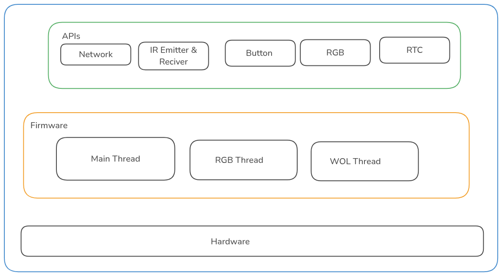
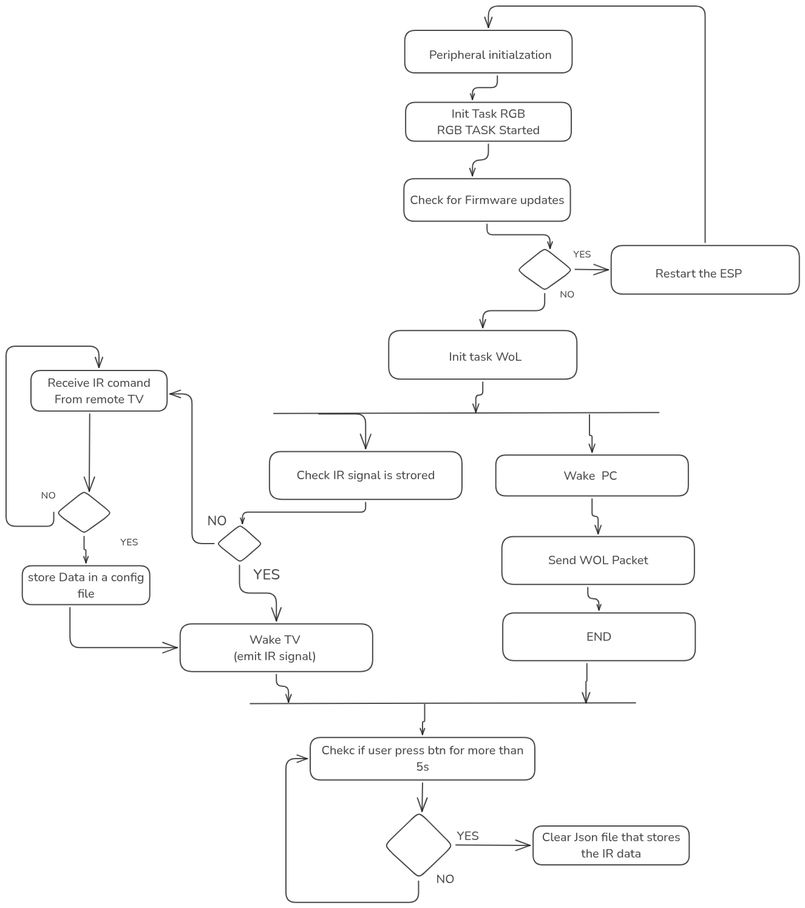

Description:
starter: is a smart automation system designed for publicity stations.
The system ensures seamless startup of a marketing stand by automating the following processes:
- TV Control via IR: Automatically powers on the TV to begin displaying content without user intervention (Remote control).
- PC Wake-Up via Ethernet (Wake-on-LAN): Wakes the connected PC to run the publicity application as soon as power is restored.
- Over the Air updates: supports OTA via ( Ethernet and WiFi) with the abilty to rollback the update fails.
Availalable Verisions:
version_1: first version conatins basic fucntionalities (Wol and IR control)
version_1.1.0: we redesigned the IR interface to be universal (supports NEC, SAMSUNG, LG, PulseDistance Protocoles)
version_1.1.1: we intergrate OTA functionalties and redsign of the other modules. we also supports rollback if the updated firmware is corrupted.
Architecture & design


Materials list:
- ESP32 dev module
- RTC module: DS1302
- SPI Ethernet module: W5500
- RGB LED
- Button
- IR reciever and emitter
Project structure
- Include Folder:
- conf.h : contains build flags that are use at compile time to enable & dispable certain modules
- Hardware.h: contains Pins defetions
- ButtonModule.h : provides APIs to control button
- IR_Module.h : provides APis to control IR send and Receive
- Mylog.h: interface for intituitive logging functionalities
- mystorage.h: provides APIs to controll Little FS ( strorage system)
- network_stack.h : provides APIs for network functionalities.
- RGBModule.h : provides APIs functionalities to control RGB
- RTC_module.h: provides APIs functionalities to control RTC
- soft_version.h : macro that contains the firmware version
- Src Folder:
- this folder contains the main Fimware :
main.cpp
- It also conatains the implemntation of the Other modules.
- The WoL_Task is the implementation of the Wake On Lan task.
- Test Folder:
- Contains the testing firmwares for modules
- data Folder:
- Contains json settings file that will be uploaded to the ESP32 board.
- Makefile:
- contains rules to automate the process of building and flashing the project.
- Scripts:
A folder that cotains python scripts that platformio uses it,
we have a script to that instructs pio at build time to append the version at the end of the build output: firmware_1.1.0.bin
Lib depends
|-- RTC @ 2.4.2
|-- ArduinoJson @ 6.20.1
|-- IRremote @ 4.4.1
|-- Ethernet @ 2.0.2
|-- SPI @ 2.0.0
|-- HTTPClient @ 2.0.0
|-- LittleFS @ 2.0.0
|-- Update @ 2.0.0
|-- FS @ 2.0.0
Usage
- clone the repo
- install the dependencies
- build the project
Contribution rules:
To add a new feature you must follow these steps:
create a new branch withe the feature name
if the feature is new module implementation: ( new sensor):
- you must follow this structure
include:
----- module_name.h
src:
----- module_name.cpp
Note For testing
To test the module or the feature
create a new file in the src file called test_module_name.cpp in platformio.ini
build_src_filter= +<test_module_name.cpp.cpp>
after testing you can move the test file in the test folder in comment out the build src flag in the platformio.ini then you can merge.
Note For commits
please make your commits informative, that explains the changes that ypou have made.